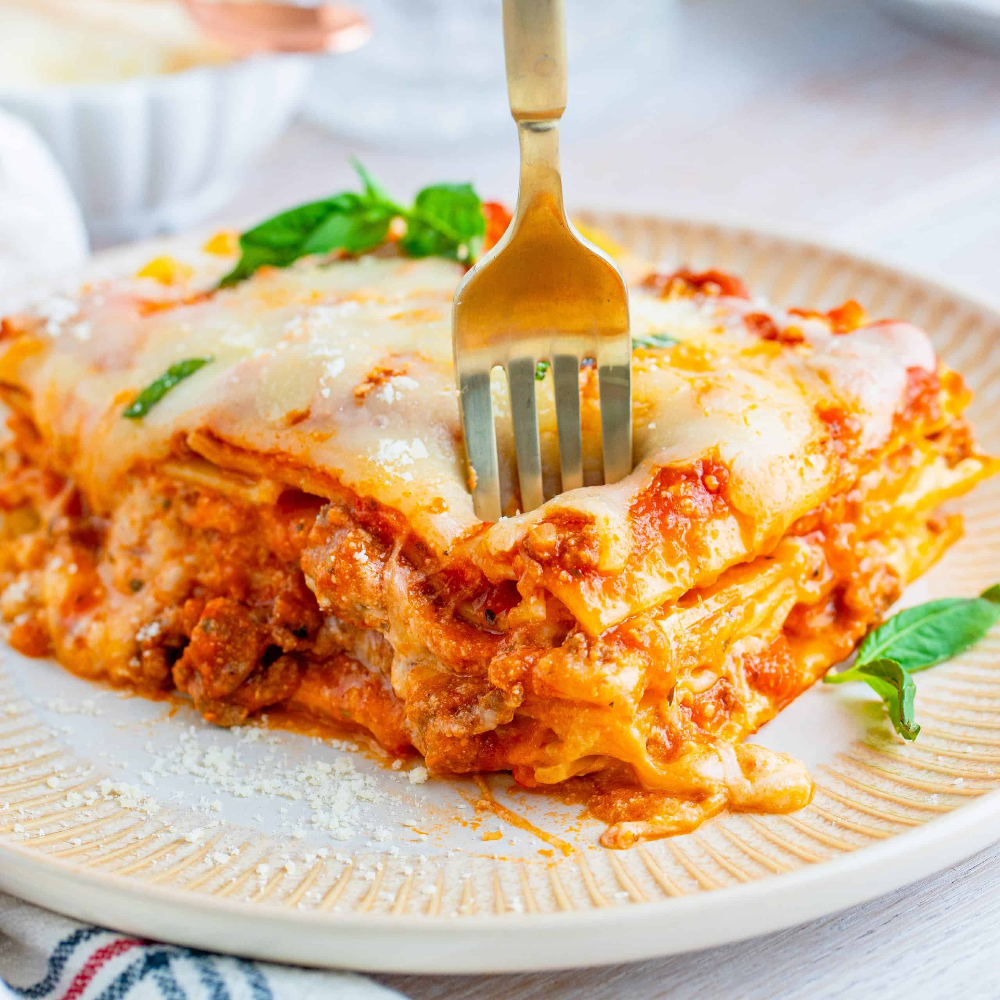

Home
Feta Eggs
Mediterranean Sandwich

Lasagna
Who doesn't love a homemade lasagna.
Just look at all that melty cheese.
Ingredients
- 1 lb ground beef
- 2 teaspoon Italian seasoning
- 1 teaspoon garlic powder
- 1 teaspoon onion powder
- ½ teaspoon black pepper
- ½ cup grated parmesan cheese, divided use
- 6 cups marinara sauce, 2 jars
- 15 oz ricotta cheese
- 1 large egg
- 4 cups freshly shredded mozzarella cheese divided use
- 1 lb lasagna noodles
Steps
- Preheat the oven to 375°F. Spray a 9x13 casserole dish with nonstick cooking spray, set aside.
- In a large skillet over medium heat brown the ground beef, breaking it up, until there is no pink left. While it’s browning, season with the Italian seasoning, garlic powder, onion powder, and black pepper. Drain off any excess grease
- Take the skillet off the heat, add in ¼ cup of the parmesan cheese and all of the marinara sauce.
- Mix together until combined, set aside.
- In a large bowl, add together the ricotta cheese, egg, 2 cups of the shredded mozzarella, and the remaining parmesan cheese.
- Mix this together until everything is smooth and combined.
- Cook lasagna noodles per the directions on the back of the box. Layout the noodles separately on a sheet tray, spraying the sheets lightly with nonstick cooking spray so they don’t stick to each other while you're waiting to assemble the lasagna.
- To assemble the lasagna, add 1 cup of the sauce to the bottom of the dish, spread it out so it covers the bottom.
- Add a layer of 5 lasagna noodles on top - you may need to cut one along the shorter end to fit.
- Top with ⅓ of the cheese mixture, smooth it out evenly.
- Add another 1 cup of sauce. Repeat with the noodles and remaining steps two more times. Top with the remaining 5 lasagna noodles and the rest of the sauce.
- Cover with foil and bake for 25 minutes until bubbly. Take off the foil and add the remaining 2 cups of mozzarella cheese. Place back in the oven for an additional 5 minutes until the cheese is completely melted.
- Let cool slightly for about 15 minutes on the countertop to cool slightly, this will help the lasagna to set up. This will make it easier to slice and serve.
- Serve with a garnish of fresh basil, optional.